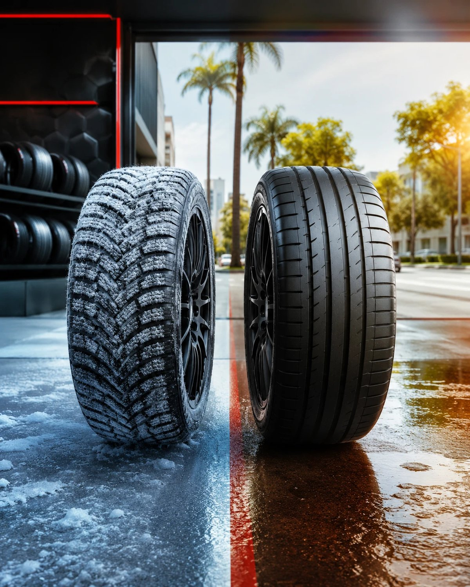

Pneu de inverno x pneu comum: qual escolher na região de Indaiatuba

Direto ao ponto: pneu de inverno não é algo que você precisa se preocupar em Indaiatuba ou Itu. Não existe legislação que obrigue o uso desse tipo de pneu no Brasil, e ele é indicado especificamente pra temperaturas abaixo de 7°C — a borracha é formulada pra continuar flexível no frio, garantindo mais tração e controle.
Onde ele realmente faz diferença
Os estados que enfrentam neve e gelo no inverno — Paraná, Santa Catarina e Rio Grande do Sul — são onde o pneu de inverno realmente se justifica. Na nossa região, interior de São Paulo, isso simplesmente não acontece: o clima é mais frio nos meses de inverno, mas está longe das condições que pedem esse tipo de pneu.
O que importa de verdade por aqui
Em vez de pensar em pneu de inverno, o que realmente vale a atenção em Indaiatuba e Itu é a manutenção básica que qualquer pneu comum precisa: calibragem correta (a pressão varia com a temperatura ao longo do dia), profundidade de sulco dentro do limite legal, e alinhamento e balanceamento em dia. Isso sim afeta diretamente a aderência e a segurança do carro no dia a dia.
É esse tipo de manutenção que a equipe da Fox Pneus e Rodas faz o tempo todo — pneus, alinhamento, balanceamento e suspensão, pensando no uso real de quem dirige por aqui.
Fonte: Guia do Auto